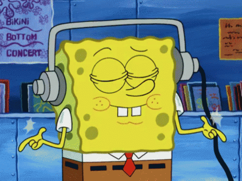

press shellphones anywhere to begin frequency doodle v2

Bummer dude, looks like this browser doesn't support HTML5 audio.
If playback doesn’t start, try using browser’s audio controls or
download the WAV
.